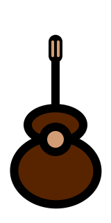
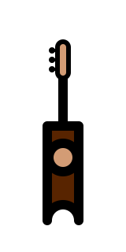

Гита́ра — струнный щипковый музыкальный инструмент.
Применяется в качестве аккомпанирующего или сольного инструмента во многих стилях и направлениях музыки, среди которых романс, блюз, кантри, фламенко, рок, джаз. Изобретённая в XX веке электрическая гитара произвела значительные изменения в музыке и тем самым оказала сильное влияние на массовую культуру.
Применяется в качестве аккомпанирующего или сольного инструмента во многих стилях и направлениях музыки, среди которых романс, блюз, кантри, фламенко, рок, джаз. Изобретённая в XX веке электрическая гитара произвела значительные изменения в музыке и тем самым оказала сильное влияние на массовую культуру.
Укуле́ле (гав. ʻukulele — скачущая блоха) — четырёхструнный щипковый музыкальный инструмент,
разновидность гитары.
Используется для аккордового сопровождения при исполнении песен, реже для игры соло.
Используется для аккордового сопровождения при исполнении песен, реже для игры соло.
Дечиг по́ндар (по́ндур) — древний национальный инструмент вайнахов — чеченцев и ингушей.
Трёххорный щипковый музыкальный инструмент, распространенный у народов Кавказа. С появлением аккордеона («Кехат-пондар»), в народе пондару также дают имя «дечиг-пондар».
Близок по конструкции к дагестанскому агач-кумузу.
Трёххорный щипковый музыкальный инструмент, распространенный у народов Кавказа. С появлением аккордеона («Кехат-пондар»), в народе пондару также дают имя «дечиг-пондар».
Близок по конструкции к дагестанскому агач-кумузу.
Аккорды

Гитара
Список аккордов, обязательных к изучению. Научитесь уверенно их ставить и не путать.
Укуле́ле
Начните с изучения этих аккордов. Их вполне достаточно, чтоб весело побрынчать :)

Дечиг по́ндар (по́ндур)
Что я знаю о нем? Практически ничего. Но его звук весьма этнический, твердый, звонкий.
Есть предложения?
Вы возможно владеете очень интересным струнно-щипковым музыкальным инструментом и хотели бы видеть аккорды его здесь. Я только за. Я дам вам административный доступ, и вы через конструктор аккордов попробуете их сгенерировать.
Если нашли ошибку, выделите текст и нажмите на кнопку.
Популярные разделы:
Рекомендуемые материалы и истонки:
- AmDm.ru российский портал для музыкантов
- MyChords.net (Hm6.ru) аккорды песен под гитару